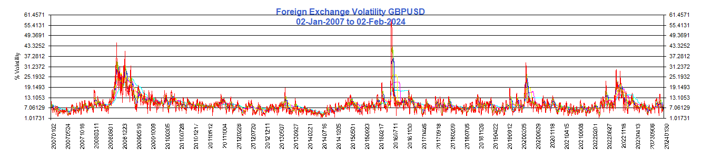

<center>
<br><br>
<a href="javascript:NewWindow('./RiskSnapPopUp_Vols_FX_GBPUSD.html','Vols FX GBPUSD','top=50,left=200,width=1350,height=500,channelmode=0,dependant=1,fullscreen=0,resizable=no,toolbar=no,status=0,scrollbars=no,location=0,menubar=0,directories=0')"></a>
<a href="JavaScript:window.close()"></a>
</center>

